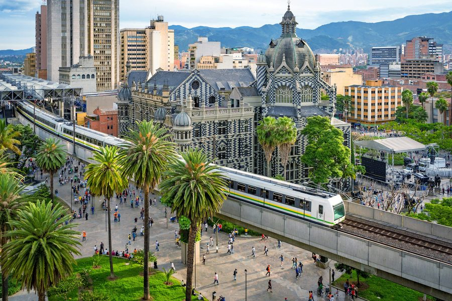

🚌 Bus Salento → Terminal del Sur Medellín

Directe bus van Salento naar de Terminal del Sur in Medellín (9u30 vertrek — om 9u aanwezig). Reistijd ±5 uur. Daarna Uber naar het hotel in El Poblado.
Bus boeken & aankomst
Boeken: flotaoccidental.co — Salento (bus #2, stop #309) → Medellín (stop #420). Kan ook ter plaatse gekocht worden.
Na aankomst: Uber nemen van Terminal del Sur naar 574 Hotel in El Poblado. Geen collectivo of onbekende taxi nemen.
- Op station
- 09:00
- Bus vertrekt
- 09:30
- Richting
- Terminal del Sur MDE
- Daarna
- Uber → 574 Hotel Poblado
🌆 Eerste verkenning — El Poblado
Inchecken in hotel 574 en El Poblado verkennen. De wijk is levendig en aangenaam — terrassen, koffiezaken, markten. Vanavond geen agenda. Eat, drink, relax na 5 uur bus.
Namiddag & avondtips El Poblado
Parque El Poblado: Centrale plaza in de wijk — rustig, omringd door terrassen. Ideaal voor een eerste koffie of frisse afrondingsdrank.
Parque Lleras: 10 min te voet — levendiger plein met restaurants en bars. Populair bij locals en expats. Heel aangenaam voor een eerste avonddiner.
Eten dag 7: El Cielo (fine dining in Medellín, reserveer vroeg), Carmen (modern Colombiaans), of gewoon tapas + bier op het plein. Geen grote plannen nodig vandaag.
Laat de telefoon opladen: Dag 8 start vroeg met de free walking tour Comuna 13 om 13u30 — maar verken eventueel al 's ochtends het centrum met de metro.
🎨 Free Walking Tour — Comuna 13

De voormalig gevaarlijkste wijk van Medellín is nu een bruisend centrum voor straatkunst, muziek en cultuur. Een lokale gids vertelt het verhaal van de transformatie en toont de indrukwekkende muurschilderingen. Gratis (fooi).
Meer over Comuna 13
Wat is Comuna 13? Een voormalig no-go zone die dankzij sociale projecten, kunst en kabelbaan-mobiliteit compleet getransformeerd is. Bekende streetart-kunstenaars zoals Chota, Yair Ojeda en Buenaventura hebben hier hun stempel gezet.
Elektrische roltrappen: De buurt is uniek verbonden met elektrische buitenroltrappen — gratis te gebruiken voor bewoners. Als toerist mag je er ook gebruik van maken.
Veiligheid: Overdag met een groep of tour is volledig veilig. 's Avonds niet alleen gaan.
- Tijdstip
- 13u30
- Duur
- 2–3 uur
- Prijs
- Fooi naar keuze
- Tip
- Doe research vooraf op de muurschilderingen — dan begrijp je de verhalen beter
🚵 Downhill Biken / Paardrijden / Paragliden
Kies je avontuur! Medellín staat bekend voor zijn actieve uitstapjes. Downhill mountainbiken door de heuvels, paardrijden buiten de stad, of paragliden boven de vallei. Vragen aan de receptie van het hotel voor aanbevelingen en boeking.
🌿 Skytrain + Kabelbaan → Parque Arvi

Neem de metro (Skytrain) naar het eindstation, dan de kabelbaan omhoog naar het prachtige Parque Arvi in de heuvels boven Medellín. Wandelen door nationaal park, fris klimaat, bijzondere flora. Niet uitstappen aan tussenhaltes!
Praktisch: kabelbaan naar Parque Arvi
Route: Metro (Línea A of B) → Station Acevedo → Metrocable Línea K omhoog tot Santo Domingo → Metrocable Línea L naar Parque Arvi.
BELANGRIJK: Niet uitstappen bij tussenhaltes op de Línea K (de populaire helling). Doorrijden naar de transferhalte Santo Domingo en dan overstappen op Línea L naar het park.
In het park: Wandelpaden, marktje op weekend, lokale fruitverkopers. Breng een lichte regenjas mee — hoger en frisser dan de stad.
Botanische tuin: Als alternatief of combinatie — de Jardín Botánico in de stad is gratis en prachtig.
- Metro
- Línea A of B → Acevedo
- Kabelbaan
- Línea K + Línea L
- Let op
- Niet uitstappen!
- Tip
- Combineer met het bekijken van de wijk Comunas vanuit de kabelbaan — prachtig uitzicht
🌆 Provenza & Parque Lleras
Twee buurten die tegen elkaar aan liggen maar totaal verschillen. Provenza is Medellíns fine-dining district: boomrijke straten met een beekje ertussen, elegante restaurants vol planten en hout, knusse wijnbars en stijlvolle cafés. Een paar honderd meter lager begint Parque Lleras — de officiële zona rosa: een neonverlicht wonderland van reggaeton-bars en kleine disco's. Niet bepaald stijlvol, wel enorm leuk, en je wandelt zo naar huis.
🌙 Onze avondroute
1 · Diner in Provenza — begin met een aperitief in een van de wijnbars, wandel dan rond en kies een restaurant. Oci.Mde is het adres dat Lonely Planet uitlicht: hedendaagse keuken op Latijns-Amerikaanse en Europese leest, met een uitstekende gegrilde octopus.
2 · Bar Octavia — relaxte bar met tafels op de veranda, uitkijkend over de drukte van Lleras. Ideaal om de avond op gang te brengen zonder er meteen in te duiken.
3 · Blue — al jaren dé rockdisco van de zona rosa, met een vrolijk gemengd publiek. Tussen alle reggaeton is dit de plek waar gitaren klinken.
Vooraf, optioneel: Envy Rooftop (op The Charlee) voor de skyline bij zonsondergang. Kom rond 17u30–18u voor het beste licht.
Nadien, voor wie verder wil: Salón Amador voor serieuzere elektronische muziek, of Calle 9+1. Clubs lopen pas vol vanaf een uur of elf.
💡 Goed om te weten
Drinken op straat: veel mensen hangen gewoon rond op het plein met bier uit de winkeltjes aan de westkant. Officieel is drinken op straat verboden, in de praktijk gebeurt het volop.
Ley zanahoria: Medellín kent een sluitingsuur. Na sluitingstijd gaat iedereen tegelijk naar buiten — reken op drukte en bestel je Uber op tijd.
Terug naar het hotel: 574 Hotel Poblado ligt op wandelafstand van Lleras. Neem toch een Uber als het laat is.
Wijnbars: Provenza's wijnbars en cafés zijn het startpunt van de avond volgens Lonely Planet — niet het eindpunt. Ze sluiten vroeger dan de clubs.